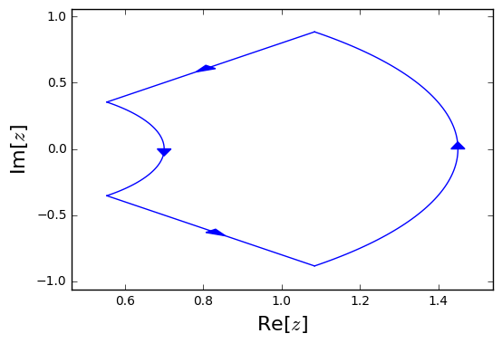

Contours¶
The routine will return all the roots of a function which lie in the interior of a user specified contour. The posibilities for choosing this contour are:
Circle¶
In [1]:
from cxroots import Circle
center = 1
radius = 0.5
circle = Circle(center, radius)
circle.show()

Annulus¶
-
class
cxroots.Annulus(center, radii)[source]¶ An annulus with given center and radii=[inner_radius, outer_radius]. The outer circle is positively oriented and the inner circle is negatively oriented.
In [2]:
from cxroots import Annulus
center = 0
radii = [0.5,0.75]
annulus = Annulus(center, radii)
annulus.show()

Rectangle¶
-
class
cxroots.Rectangle(xRange, yRange)[source]¶ A positively oriented rectangle in the complex plane
In [3]:
from cxroots import Rectangle
xRange = [-0.8, 1.2]
yRange = [-0.6, 1.4]
rect = Rectangle(xRange, yRange)
rect.show()

Rectangle in polar coordinates¶
-
class
cxroots.PolarRect(center, rRange, phiRange)[source]¶ A positively oriented contour which is a rectangle in polar coordinates with verticies: [[radius0,phi0],[radius0,phi1],[radius1,phi1],[radius0,phi1]]
In [4]:
from cxroots import PolarRect
from numpy import pi
center = 0.2
r = [0.5, 1.25]
phi = [-pi/4, pi/4]
polarRectangle = PolarRect(center, r, phi)
polarRectangle.show()

In [5]:
from cxroots import PolarRect
from numpy import pi
center = 0.2
r = [0.5, 1.25]
phi = [pi/4, -pi/4]
polarRectangle = PolarRect(center, r, phi)
polarRectangle.show()